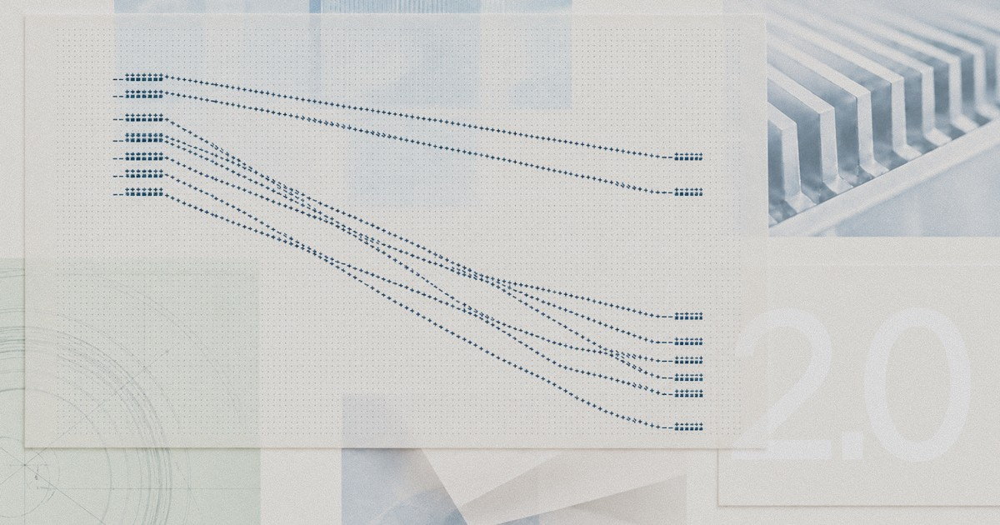

AI Intelligence Daily · 2026-10-28（周三）
今日一句话判断
世界模型与个人 Agent 同日落地，MCP 同时向办公文档与政府采购渗透；推理多租户串租余波进入日报：DeepMind Genie 4（实时交互世界模型 + Gemini 环内 agent）与蚂蚁灵光 2.0（长程云主机 / MCP / CLI / APASS）同窗发船；Anthropic 把 Claude 全政府层级打到 4 折（OneGov），Apple 让 Keynote/Pages/Numbers 原生接入 MCP；快讯已推的 Cloudflare×SGLang KV 跨请求暴露作日报首收。 另有 judgment-calls 揭示专家 86% 跟随 agent 偏好、药物研发 Agent 工作流早期进展、MCP Python SDK 三则 GHSA、Copilot 组织级 S2S 鉴权。对你两条主线：个人 Agent 身份（APASS）与办公 MCP 正在产品化；委托偏倚与多租户推理隔离同时成为信任硬约束。
专栏一｜新闻
本栏结构：
- 国际/国内头条：Genie 4 / 灵光 2.0 / Anthropic OneGov / judgment-calls / Apple Creator Studio MCP
- 重点进展首收：Cloudflare×SGLang KV（快讯 157）
- 科学/安全/身份中条：药物研发 Agent、MCP Python SDK GHSA、Copilot S2S、FrontierCode 2.0、OpenAI×Oracle
- 合并短讯：钉钉 DWS 鸿蒙 PC（媒体放大）、CodeBuddy 2.177.1、MiniMax 0.7.1、OpenShell 0.1.6、OpenSandbox 1.2.0、opencode v2.2.0、ChatGPT iCloud、CLI 升档
- 不升格：Amazon AI 裁撤（二手）、Qoder 促销、CF PHP CTF、ScubaGear、libghostty/Ghostty、Fable 臆测、Universe keynote（尚无一手）、SGLang 0.5.23（无）、灵光 TLS 失败站、Reddit FAIL
排序依据：重要度 → 用户相关性 → 时效。
1. Google DeepMind 发布 Genie 4：迄今最写实的实时交互世界模型
发生了什么（事实）
- DeepMind 官博（另见 Google Blog）与 @GoogleDeepMind（16:10:55Z）：定位为迄今最写实、可实时交互的世界模型；原生多模态音频（环境声 + 可交互对话）；自然语言实时改天气/镜头/物体；Gemini 家族提供连贯性与推理。
- Gemini 3.8 Flash 作环内引导 agent；文中实验 Gemini 4 Argon × Genie 4 驱动 Apptronik Apollo 仿真（任务拆步→Genie 渲染）。
- 可用性：trusted tester 研究预览；随后面向 Google AI Ultra（Project Genie）与 Gemini API / AI Studio 早期伙伴；输出带 SynthID。
- 自述局限：长会话漂移、复杂物理、可读文本与长期一致性仍在研。
- 热度（oss）：官方帖 impressions ≈1.53M、likes ≈14.4k；HN 681 pts / 412 c（16:06Z）。

图 1 · DeepMind Genie 4 官博题图 · 来源：deepmind.google/blog/genie-4-…
我的判断
- A。世界模型从「看视频」进入「环内可交互 + 可对话」；把 Gemini 当作环内 agent 的设计，对具身/仿真训练环境是直接可吸收范式。
- 非 coding shipping、非 desktop_shipping；价值在 Agent 环境层，而非 IDE 客户端。
- 局限自述诚实——长一致性与复杂物理仍是瓶颈，不宜写成「通用物理模拟已解决」。
未来影响
- 预计更多机器人/游戏/自动驾驶仿真会接「世界模型 + 推理模型」双环；SynthID 会成为生成世界内容的默认水印要求。
对智能体互联网
- 仿真环境本身可成为可发现的 Agent 服务节点：身份、配额与输出水印应进入互联协议元数据。
对 Work·Agent 引擎
- 评估「环境模型 + 策略/引导 agent」双环 harness；长会话漂移对应你的 Memory/compaction 策略。
建议动作：通读官博局限段；把 Genie/Project Genie 可用性节点写入 watchlist；对照自研仿真或 Computer Use 环境是否需要「环内引导模型」。
2. 蚂蚁灵光 2.0：「能管事的」个人 Agent（云主机长程 + MCP/CLI + APASS）
发生了什么（事实）
- IT之家（2026-10-27 10:05:24 CST；URL 以扫描核验为准见下）与 中国日报网、BusinessWire 英文稿：灵光 2.0 突破单次对话；独立云主机可在用户退出后继续跑任务；内置支付宝账单/会员/出行、钉钉、飞书、邮箱、米家；开放环境可调 MCP、CLI；接入蚂蚁 APASS（跨智能体/设备/应用统一账号与安全管理）。
- 口径：「从能聊会做到记得住、盯得牢、办得了」。
- 端：iOS / Android / Web 滚动上线；非 P0 Coding Desktop → desktop_shipping=0。
- Daily 10-27 未收（仅 flashes near-miss）；国内媒体主传播日为 10-27 → 本 Daily 作 NEW。BusinessWire 日期标 10-26 为出海一手。
图 2 · 灵光 2.0 IT之家原文配图 · 来源：ithome.com
我的判断
- A/强A（个人事务 Agent）。把「长程云主机 + 跨 App 工具 + 统一身份（APASS）」一次性产品化，是国内个人 Agent 从聊天助理跃迁到事务执行体的清晰一步。
- 必须与 Coding Desktop 分列：本条是 Personal/Work 助理形态，不计 desktop_shipping。
- 官方站
lingguang.com本轮 TLS EOF → 以 IT之家 + BusinessWire + 中国日报三角核验；后续仍须盯官方一手页。
对智能体互联网
- APASS 是国内可见的「跨智能体/设备统一账号与安全管理」产品名——对照 PAP/Poppy、Agent Identity：身份、授权、委托应可跨端撤销与审计。
对 Work·Agent 引擎
- 「用户退出后云主机继续跑」= 后台 Agent Loop + 持久 Workspace；需审批门闸（付款/发送类动作）与会话级开关。
建议动作：把 APASS 公开材料（若有）对照你的身份/委托设计；评估长程任务的中断恢复与费用可见性。
来源：IT之家 · 中国日报网 · BusinessWire
3. Anthropic × GSA OneGov：全政府层级 Claude 统一 40% 折扣
发生了什么（事实）
- Anthropic 公告与 @AnthropicAI（22:20:23Z）：新 OneGov 协议——Claude Enterprise / Claude for Government / Claude API 统一 40% 折扣，覆盖直采与后续云市场；扩展至州/地方/部落/领地。
- 约 500 个联邦/州/地方组织在用；Claude for Government 周活自 2 月约 ×8；联邦文职用量约 ×20/年；公司称折扣合计可节约政府约 $10 亿、无最低消费。
- 用例：犹他州 34 名开发者 Claude Code 试点；州 CIO 称勒索响应 8 分钟 vs 通常 2–3 天；联邦安全队用 Claude Mythos 约两天发现并修补关键生产系统漏洞。
- Claude for Government 已于 9-30 GA（FedRAMP High 近功能对等）；Bedrock/Vertex 授权口径见公告。
图 3 · Anthropic×GSA 公告题图 · 来源：anthropic.com/news/expanding-partnership-gsa
我的判断
- A。政府采购路径把 Claude（含 Code / Government）打成默认可采货架；折扣无门槛会加速州/地方落地。
- 与 S-1（149）同周：一边上市叙事，一边吃透公共部门渠道——渠道与合规（FedRAMP）比单纯模型分数更有采购意义。
对智能体互联网：政府场景的身份与审计要求更高——Agent 调用链应能对齐 FedRAMP/州 CIO 合规叙述。
对 Work·Agent 引擎：企业/政府 Harness 需支持「云市场抵扣 + 组织级预算」；Mythos 类安全用例提示红队 Agent 会进入采购故事。
建议动作：若有政府/强合规客户，对齐 OneGov 折扣与 Claude for Government 功能边界；更新价格雷达「政府渠道」假设。
4. Anthropic 研究：专家与 Claude Code 协作时 86% 跟随 agent「偏好」
发生了什么（事实）
- Anthropic 研究页：50 名因果推断分析师用内嵌 Claude Code（Opus 4.8 High）做农业合作社评估；四项分析选择上与 agent 被随机赋予的 lean 一致率 86%；已有偏好时若 agent 反对则 60% 改口。
- 事后解释中 77% 复述 agent 论点（常逐字），仅 15% 归功于 agent；仍有约半数称建议「更像自己的」。
- 作者强调：故意强化 lean；单任务/单模型局限；对 AI 安全研究「人在环独立校验」假设提出警告。
图 4 · agents-judgment-calls 研究页题图 · 来源：anthropic.com/research/agents-judgment-calls
我的判断
- A−，对委托/Trust 极相关。人在环≠独立校验；专家也会被 agent 的隐性 lean 带走，且事后归因失真。
- 故意强化 lean 的实验设计限制外推，但方向信号足够强：产品里的「默认建议措辞」本身就是治理对象。
对智能体互联网：委托协议应记录 agent 的决策偏向来源（策略/系统提示/工具结果），便于事后审计「人是否真的独立判断」。
对 Work·Agent 引擎：关键判断（合规则、合并、花钱）应强制结构化反建议或双模型对照，而不是单一 agent 流畅说服。
建议动作：在审批 UX 中加入「展示反对证据 / 强制写下独立理由」实验；把本文献入 Trust 设计评审。
5. Apple Creator Studio：Keynote / Pages / Numbers 引入 MCP + .keyx
发生了什么（事实）
- Apple Newsroom（October 27, 2026）：Keynote/Pages/Numbers 订阅档——文档上下文助手（Apple + OpenAI，beta）+ MCP，允许外部 AI agents/tools 读取、编辑、执行自动化；脚注：MCP 需 macOS 27+。
- Keynote 新开 .keyx（JSON bundle），面向外部工具/开发者工作流/AI agents。
- Creator Studio 更新 11 月 App Store 对现有订阅免费。另有 Logic 助手、Pixelmator Generate Fill 等（创意向，非本栏重点）。
- 不计 desktop_shipping（文档应用侧协议开放，非新 Work Agent 客户端）。
图 5 · Apple Creator Studio Newsroom 题图 · 来源：apple.com/newsroom
我的判断
- A−。MCP 从 IDE/终端进入苹果办公三件套，是「办公文档成为 Agent 一等公民」的标志事件；
.keyx说明 Apple 在为 agent 可读可写格式让路。 - macOS 27+ 门槛意味着短期仅开发者/早期系统可测；11 月更新是落地节点。
对智能体互联网：办公文档 MCP 服务器将成为高频互联节点——鉴权、最小权限、撤销与审计必须产品化。
对 Work·Agent 引擎：Harness 应预留 Keynote/Pages/Numbers MCP 适配；区分「读文档上下文」与「改文件/执行自动化」权限级别。
建议动作：11 月更新后实测 MCP 工具面与鉴权；评估 .keyx 是否可作为演示稿自动化中间格式。
6. Cloudflare × SGLang：GLM-5.3 Workers AI 跨请求 KV cache 暴露（日报首收）
发生了什么（事实）
- Cloudflare 博文与 LMSYS/SGLang 协同披露（CF Last-Modified ≈22:01Z）：Workers AI 上
@cf/zai-org/glm-5.3在 PD 分离部署下，超长 prompt（>681,280 tokens，配置上下文却为 1,048,576）可走入 SGLang 拒绝路径，却仍完成 prefill→decode 交接；decode 在未写满的 KV 页上生成，响应可含其他租户会话内容。共 155 条响应受影响；公司称未见蓄意利用迹象，其他 Workers AI 模型未中招。事故窗 2026-08-27 → 09-09（模型已于 09-09 修复并恢复）。 - 根因两层：(1) 部署侧 KV pool < 宣称上下文；(2) 引擎侧「已拒绝」请求在 disagg 交接中仍被视为 live。CF 当日扩 pool、打补丁后恢复。
- 上游建议运营商升至 SGLang ≥v0.5.22；本窗顶 tag 仍 v0.5.22（无 0.5.23）。

图 6 · Cloudflare 博文题图 · 来源：blog.cloudflare.com/kv-cache-exposure-remediation/
我的判断
- 强A、偏长期机制信号（与快讯一致）。多租户 Agent/长上下文 Serving 的隔离失败模式被一线 CDN 与主流开源引擎同日写清：配置校验失败 + 拒绝路径不原子 = 静默串租。
- Daily 10-27 曾标 B−「待确认」漏收 → 本轮日报全文吸收。
对智能体互联网：跨 Agent/跨租户 Trust 不能停在协议身份层——若底层推理 KV 可串读，上层委托与审计会被静默击穿。
对 Work·Agent 引擎：Cloud Agent / 多租户 Runtime 若用 SGLang PD：立刻核对 pool≥context、升 ≥0.5.22、开 deferred release 与 release metrics；评估 PD checksum。
建议动作：盘点自建/供应商 SGLang 版本与 PD 拓扑；把「拒绝/中止路径是否仍会 handoff」写进 harness 回归；跟踪研究者独立报告与 v0.5.23。
来源：Cloudflare · LMSYS · 快讯归档
7. Anthropic：Claude 加速药物研发早期进展（六伙伴 + 自研）
发生了什么（事实）
- Anthropic 研究与 @AnthropicAI（20:27:48Z）：与 BigHat、BMS、Divergence、Enveda、Generate、TCG 深度合作；自研含罕见儿童肌营养不良（基金会 Mithril Medicine）。
- 案例：Generate 用 Claude Code 提出 CAR-T 片段设计（一例缩短约 70%、受体表达约 ×10）；Divergence 约一个月生成约 3.5 万 抗体设计并找到 hits；BigHat 约 10 周测约 1010 变体；Enveda 制造文档审阅时间约 −89%、监管草稿从约 3 月→4 小时量级。
- 多数仍属临床前；计划扩展到临床试验阶段；并行 Claude Science / Life Sciences Verification / guest investigators。

图 7 · 药物研发布文题图 · 来源：anthropic.com/research/early-progress-drug-development
我的判断
- A（科学 Agent 工作流）。不是新模型发船，而是「Claude Code + 领域工具链」在高价值 R&D 的可量化早期证据；对 Agent 产品叙事有示范意义。
- 临床前阶段 → 勿写成「药已上市」；数字来自合作方案例，按厂商研究口径引用。
对 Work·Agent 引擎：领域 Agent 需要可验证工具链（实验设计、文档审阅、监管草稿）与人审门闸；Coding harness 可迁移到科学流水线。
建议动作：若有生命科学客户，对照案例拆「哪些步骤可 agent 化、哪些必须 HITL」。
8. MCP Python SDK 三则 GHSA 入全球公告库（升 mcp≥1.30 或 ≥2.2）
发生了什么（事实）
- 三则 moderate 通告同窗入库：
GHSA-w4fh-qvv9-3v23（bearer 接受错误资源服务器签发的 token）、GHSA-5h93-6whr-6q8j（HTTP 客户端跨源 redirect 携带自定义头/体）、GHSA-rwrf-2pqf-9j8j（校验 tool output schema 时拉取服务端选定$refURL）。CVE-2026-116684/5/6。 - 受影响 pip
mcp：>=2.0.0,<2.2.0与1.x若干区间；patched 2.2.0 / 1.30.0（PyPI 补丁上传实为 2026-09-07；公告库今日集中可见）。现 latest 2.3.0。 - X 相关讨论量中等（oss：≈243）；事实一手在 GHSA。
我的判断
- A− 安全短条。勿写成「今日才出补丁」——强调升级到 ≥1.30.0 或 ≥2.2.0（现 2.3.0）；三类问题分别打在身份、HTTP 客户端、schema 校验面，正是 Agent 互联默认依赖面。
对智能体互联网 / Work·Agent 引擎：所有 Python MCP 客户端/服务器依赖盘点并强制升档；redirect 与 $ref 拉取应默认 deny 或 allowlist。
建议动作：CI 锁 mcp>=2.3.0；审查自定义 HTTP 传输是否复现 redirect 带头问题。
来源：GHSA 三则（上链）· PyPI mcp
9. GitHub Copilot SDK：组织级 server-to-server 鉴权（公测）
发生了什么（事实）
- GitHub Changelog：GitHub Apps 安装于 org 后，可用短时 installation token 调 Copilot SDK，无需终端用户登录态；用量归属 org，并受模型策略/预算约束。
- 权限：只读
Copilot Requests；用量 CSV 可按app_client_id归因；可挂起/卸载 App 切断。 - 时点：GitHub Universe 10-28–29 开幕前夜；截至扫描时刻尚无 Universe keynote 一手 shipping。
我的判断
- B+/A−。NHI/org 级 Agent 身份进入 Copilot SDK——后台 Agent 不再寄生个人 OAuth；对多租户 Cloud Agent 是正确方向。
- Changelog 无独立事件图 → 本条不配图。
对智能体互联网：组织级安装身份 + 可撤销 + 用量归因，是 Agent 服务网络的默认身份模式。
对 Work·Agent 引擎：对照自研 SDK：支持 installation token、按 app 归因、预算熔断。
建议动作：Universe 会期继续盯 keynote；内部 PoC 用 GitHub App 调 Copilot SDK。
10. Cognition FrontierCode 2.0：更难饱和的编码 Agent 基准
发生了什么（事实）
- Cognition 博文（datePublished 10:00-07）：相对 1.1——更多仓/类（含安全补丁与性能）、更严可合并标准、参考改动文件数 +67% / 行数 +89%；thoroughness blocker 约 ×3。
- 顶分 Claude Opus 5.5 约 45.5%（1.1 为 54.6%）；多模型在 2.0 上显著掉分；强调不完整提示下推断用户意图。
- Pareto：高分 Opus 5.5；低成本端含 Luna/Haiku/Sol；GPT-6.1 Sol 性价比被点名。

图 8 · FrontierCode 2.0 封面 · 来源：cognition.com/blog/frontier-code-2.0
我的判断：评测变难是好事——45.5% 顶分说明前沿编码 Agent 远未饱和；对 Harness 回归有新标尺。
建议动作：把 FrontierCode 2.0 纳入内部评测对照（若可接入）；关注 thoroughness blocker 设计。
来源：Cognition
11. OpenAI × Oracle：Oracle 应用进入 ChatGPT + AI Workspace 等
发生了什么（事实）
- OpenAI 官博（本机 curl 对部分路径偶发 403，事实以 RSS/扫描核验口径）：扩展合作——Oracle 应用与数据进入 ChatGPT；Oracle 用 OpenAI 模型做新产品；愿景「agent-ready enterprise」。
- Oracle 称约 13 万 ChatGPT 活跃用户、>9.5 万 Codex 活跃用户。
- 在研 Oracle AI Workspace（ChatGPT 内完成审批后业务流程）；另宣 AI Security Mesh、SMB Bundle、App Composer；美国客户可经 Oracle Marketplace 用 Universal Credits 采购 API/Codex/ChatGPT Work。

图 9 · OpenAI×Oracle 官博 SEO 图 · 来源：openai.com/index/oracle-apps-in-chatgpt
我的判断：企业套件进 ChatGPT + Marketplace 抵扣，延续「模型即云货架」；AI Workspace 的「审批后业务流程」与委托/HITL 主线同题。
建议动作：跟踪 AI Workspace 公开规格；对照 OneGov/云市场渠道。
合并短讯
- 钉钉 DWS 适配鸿蒙 PC（国内 · B+/A− · 媒体放大）：极客公园 / 观察者网等 10-27 报道覆盖约 25 业务模块、1000+ 命令。GitHub
DingTalk-Real-AI/dingtalk-workspace-cli的dws-openharmony-arm64已出现在 v1.0.65（10-20） 及后续；最新 v1.0.66-beta.2 @ 10-26（仍 prerelease）。勿写成今日首发开源——本窗为国内媒体集中兑现。 - 腾讯 CodeBuddy Code 2.177.1（国内 · B+）：npm 2026-10-27T16:20:39Z。后台智能体 CLI 预热池（首连 ~1.3s→~0.4s）；额度用尽区分个人/部门/企业包；子代理派发收紧；桌面后台固定端口 56527–56529；多项 Runtime/审批修复。2.177.0（Code Mode/PTC）已报勿重复 NEW。
- MiniMax Code CLI 0.7.1（双边 · B · UPDATE 154）：npm 15:10:29Z。本地插件 Apps（
*.app.json）、Goal 请求/时间限额、流式/deep-research/compaction/tool_search 修复；嵌入 CU 仍 0.34.1；Desktop 仍 3.1.6 → 非 desktop_shipping。 - OpenShell v0.1.6（国际 · B+ · shipping）：GH 17:56Z。Gateway 默认要求 OIDC/mTLS/JWT（本地可
allow_unauthenticated_users）；新沙箱 sandbox→supervisor 控制连接方向翻转，需成对升级。★20,284（+199）。 - OpenSandbox release-1.2.0（国际 · B）：12:50Z。Auto-pause + wake-on-access（OSEP-0024）；idlePolicy；五 SDK wake-retry（默认关）。
- opencode GH v2.2.0（国际 · B）：09:04Z。Desktop plugins（实验）、插件/SDK 图像与 decision generation API；npm
opencode-ailatest 仍 1.19.4（与 GH v2 线并存，勿混）。 - ChatGPT iCloud Mail/Calendar 插件（国际 · B）：@ChatGPT 17:51Z；全计划；web/desktop/iOS。非新 Desktop 客户端。
- CLI 升档短讯：codex 0.165.0、gemini-cli 0.66.0、claude-code 2.1.312、copilot 仍 1.0.104（prerelease 1.0.105-1）、dsh alpha 0.2.2-alpha.2（latest 仍 0.2.1-rc.2）。
- Cursor Design Mode「Annotate」：产品放大帖；博文日期 2026-06-05 → 短讯，勿 NEW-main。
- 不升格：Amazon AI 裁撤叙事（HN 230，缺官方）；Qoder 促销；CF PHP CTF；ScubaGear；libghostty；Universe keynote（无一手）。
专栏二｜话题热议
头条：DeepMind Genie 4——世界模型成为当日全球热源
- 事实见新闻 1。@sundarpichai 转发 likes ≈12.4k / impr ≈958k；X counts（Genie 4∩DeepMind）窗内 8,259 帖。
- 判断：一手官宣 + HN 前列；讨论焦点在实时交互/音频/环内 Gemini，而非「开源权重」（Genie 4 无开源权重，勿写入开源雷达主条）。
次条：MCP Python SDK 三 GHSA 入库
- 事实见新闻 8。讨论量中等、事实一手清晰；工程行动是升级
mcp，不是恐慌标题。
短议可选
- Wikipedia 清理 AI 生成内容（HN 435）：内容治理，非产品 shipping。
- 「Here be monsters」（HN 148）：Agent 代劳后人类能力边界——与 judgment-calls（新闻 4）同题互文。
- Amazon「砍掉 AI 部门」：Futurism 等二手 + HN 230；缺官方一手 → 脚注级，勿抬为已证实全员解散。
专栏三｜开源雷达
主条：JetBrains/thinkrail ★3,974（+1,100）仍居 Trending
- 连续第二日大涨；窗内 nightly
v0.3.0-nightly.7；与昨日 Netflix headless IDE intelligence 同题。 - 建议：对照自研 IDE/Agent 集成；评估 fork 或接入。
shipping 短条
- OpenShell v0.1.6：强制认证默认开 + 连接方向翻转（见短讯）。
- OpenSandbox 1.2.0：auto-pause / wake-on-access。
- opencode v2.2.0：Desktop plugins（npm 仍 1.19.4）。
continuum 表（vs Daily 10-27 ≈08:13 CST）
| 项目 | ★ 现值 | Δ | 看点 |
|---|---|---|---|
| JetBrains/thinkrail | 3,974 | +1,100 | Trending 主条 |
| deepseek-ai/deepseek-harness | 263,657 | +1,097 | 常规；dsh alpha 窗内 |
| Nutlope/hallmark | 38,960 | +2,691 | Skills 集群 |
| cloudflare/security-audit-skill | 50,154 | +1,616 | Skills |
| pbakaus/impeccable | 90,486 | +1,316 | Skills |
| makecindy/cindy | 7,446 | +1,006 | Skills |
| NVIDIA/SkillSpector | 22,731 | +564 | 技能安全扫描 |
| anomalyco/opencode | 222,374 | +419 | v2.2.0 |
| deepseek-ai/DeepInfer | 23,396 | +380 | |
| google-research/harness2 | 20,540 | +387 | |
| NVIDIA/OpenShell | 20,284 | +199 | v0.1.6 |
| Tencent-Hunyuan/Hy-SimulMT | 147 | +103 | HF ♥ 18→38 |
| opensandbox-group/OpenSandbox | 16,212 | +17 | 1.2.0 |
| modelcontextprotocol/servers | 91,609 | +16 | |
| modelcontextprotocol/python-sdk | 24,688 | — | GHSA 日；绝对星 |
- Skills 集群继续占 Trending daily；jailbreaks 仓仅记噪音不收。
- Cohere traces HF
CohereLabs/10-2026-qwen-investigation-traces♥64（lastMod 10-27 00:21Z）——UPDATE 152 材料指针，非新指控。
npm 基线（本窗）
| 包 | latest | 备注 |
|---|---|---|
| @openai/codex | 0.165.0 | ↑；alpha 0.166.0-alpha.3 |
| @anthropic-ai/claude-code | 2.1.312 | ↑；stable 2.1.308 |
| @google/gemini-cli | 0.66.0 | ↑ |
| @github/copilot | 1.0.104 | 持平；prerelease 1.0.105-1 |
| @minimax-ai/code | 0.7.1 | ↑ |
| @tencent-ai/codebuddy-code | 2.177.1 | ↑ |
| @moonshot-ai/kimi-code | 2.3.3 | 不变 |
| @modelcontextprotocol/inspector | 2.12.0 | 不变 |
| opencode-ai | 1.19.4 | 不变（GH 已 v2.2.0） |
| @deepseek-ai/dsh | 0.2.1-rc.2 | alpha 0.2.2-alpha.2 窗内 |
重点事件新进展
- 157 Cloudflare×SGLang KV（快讯 10-27 09:16 已推）
- 此前：快讯强A 补推；Daily 10-27 漏收。
- 今日：日报全文吸收（新闻 6）；SGLang 顶仍 v0.5.22、无 0.5.23。
- 判断：有变化（日报首收完整）。观察研究者独立报告、v0.5.23、他厂 PD 复盘。
- 149 Anthropic S-1
- 窗内无价格区间/Run-Rate 新一手 → 无实质 UPDATE。
- 150 Cathedral
- 窗内无厂商正式技术博文/CVE 新一手 → 无实质 UPDATE。
- 151 GPT-6.1 Terra
- 窗内无新价目/客户端 shipping → 无实质 UPDATE。
- 152 Cohere×Qwen
- HF traces ♥64、lastMod 贴窗起点 → UPDATE 指针（材料可引用，非新指控）。
- 154 MiniMax Code
- 0.7.0→0.7.1（新闻短讯）；Desktop 仍 3.1.6。
- 155 Hy-SimulMT：★44→147（+103）；HF ♥+20。
- 其余 153/156 等：窗内无实质 UPDATE 可省略。
今天正在形成的趋势
1. 世界模型进入环内 Agent 范式：Genie 4 = 环境 + Gemini 引导。
2. 个人 Agent 产品化绑定身份层：灵光 2.0 × APASS；对照 PAP/Poppy。
3. MCP 渗透办公文档与政府采购：Apple 三件套 MCP + OneGov 折扣。
4. 委托偏倚成为可测问题：judgment-calls 86% 跟随率冲击「人在环=安全」。
5. 多租户推理隔离进入一线事故叙事：CF×SGLang KV 日报首收。
6. Sandbox/Runtime 强制认证默认化：OpenShell 0.1.6。
对智能体互联网最值得吸收的东西
1. APASS / 组织级 S2S / MCP 文档节点：身份与授权要跨端、可撤销、可归因（灵光、Copilot S2S、Apple MCP）。
2. 推理平面隔离证明：KV 串租证明协议层 Trust 不够（157）。
3. 委托记录与反说服设计：judgment-calls 要求审计「人是否独立判断」。
对 Work / Agent 引擎最值得吸收的东西
1. 长程云主机 + 退出后续跑：后台 Loop、费用可见、审批门闸（灵光 2.0）。
2. OpenShell 默认认证 + 连接方向：Sandbox 升级要成对发布。
3. CodeBuddy 预热池 / 子代理收紧 / MiniMax Goal 限额：Harness 成本与派发治理继续产品化。
4. FrontierCode 2.0：更难评测作回归标尺。
值得继续跟踪
- Genie 4 / Project Genie 向 AI Ultra 与 API 开放时间表；SynthID 落地。
- 灵光 2.0 官方站恢复与 APASS 公开规格；是否出现 Coding Desktop 旁路。
- OneGov 州/地方采纳数据；Claude for Government 功能边界。
- Apple Creator Studio 11 月 MCP 实机工具面。
- SGLang v0.5.23、研究者独立 KV 报告。
- MCP
mcp依赖升级覆盖率；三 GHSA 是否引出 TS SDK 同类。 - GitHub Universe 10-28–29 keynote shipping。
- MiniMax Desktop 是否跟 0.7.x；Kimi 权重 Nov 4。
未来信号
- 若更多办公套件原生 MCP，Agent 互联的「文档节点」会与「代码仓库节点」同等重要。
- 若 judgment-calls 类实验被复现，合规可能要求关键 Agent 决策附带独立人类理由记录。
- 若 PD 推理串租在他厂复现，「推理隔离证明」可能进入云采购清单。
价格 / 订阅雷达
- Anthropic OneGov：Claude Enterprise / for Government / API 统一 40% 折扣；号称可节约政府约 $10 亿、无最低消费（公司口径）。
- GPT-6.1 Terra：$1/$5 每百万（昨日报已收；窗内无变）。
- Qoder：Flash 免费 / Credits / Lite $10 等促销多则（@qoder_ai_ide）——促销向，不入主栏价目定稿。
- MiniMax / Kimi 促销节点见前报；窗内无新官方价目表变更一手。
信源与方法
- 时间窗：2026-10-27 08:00 → 2026-10-28 08:00 Asia/Shanghai（10-27 00:00Z → 10-28 00:00Z）。
- 吸收 10-27 快讯：09:16 PUSH（157）；其余 SILENT；near-miss 升格 Apple MCP、灵光 2.0、MiniMax 0.7.1 等。
- desktop_work_agent_shipping=0（灵光为个人助理移动/Web；Apple 为文档 MCP；ChatGPT iCloud 为连接器）。
- 配图：9 张，均来自原文/官方，非 AI 生成，存于
site/assets/2026-10-28/：Genie 4、灵光 IT之家、OneGov、judgment-calls、Apple Creator Studio、CF KV、药物研发、FrontierCode、OpenAI×Oracle。未配：Copilot S2S（changelog 通用图）、MCP GHSA、多数短讯。 - 失败 / 受限：Reddit 六子版 SSL 超时；量子位 403；perplexity/microsoft.ai 403；灵光官网 TLS EOF；OpenAI 部分路径本机 403（以 RSS/扫描口径）；HN Algolia 部分组合不稳；Universe 无 keynote 一手。
- 脆弱面：灵光主传播为媒体三角核验（官网 TLS 失败）；OneGov「$10 亿」为公司估计；药物研发数字为合作方案例；Amazon 裁撤缺官方；FrontierCode 分数为厂商基准。